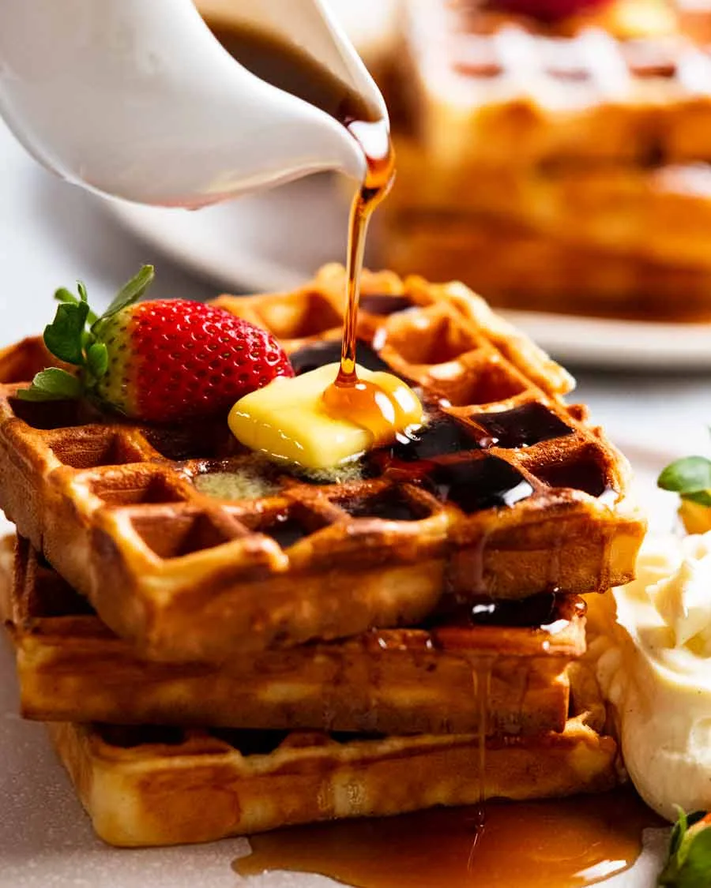

Waffles!

Make Delicious Waffles
Waffles are a type of breakfast food made from a batter that typically contains flour, eggs, milk, sugar, and baking powder. The batter is poured into a waffle iron, which has a distinctive grid pattern, and cooked until it's golden brown and crispy on the outside. This creates a waffle with deep pockets that can hold toppings like butter, syrup, fruit, whipped cream, or even savory options like fried chicken. Waffles are popular around the world, with variations in texture, flavor, and serving styles, such as the light and fluffy Belgian waffles or the thinner, crispier American waffles.
Ingredients
- 2 1/4 cup flour
- 2 1/2 tbsp caster sugar
- 4 tsp baking powder
- Pinch salt
- 1 1/3 cup milk
- 1/2 tsp vanilla essence
- 4 large eggs
- 150g unsalted butter
Toppings!
- Butter
- Maple syrup
- Icing sugar
- Strawberries
Steps
- Whisk dry – Place the flour, sugar, baking powder and salt in a large mixing bowl. Whisk to mix.
- Whisk in wet – Add milk, eggs and vanilla. Whisk to combine. Add melted butter then whisk until lump free. The batter should be pourable but thick – slightly thinner than pancakes.
- Recommended resting – Cover then refrigerate overnight, or for at least 2 hours. Softer insides, better flavour. Else, proceed immediately with cooking.
- Preheat a waffle maker. A non stick one will not need oil, plus there is butter in the batter.
- Cooking – Use a ladle to pour batter in to just cover the iron. Don't get greedy – it will leak out the sides! Cook until golden and crisp – my good waffle iron takes 3 1/2 minutes, my Kmart one takes 6 minutes.
- Serving – Transfer onto plates and serve as you go, with desired toppings.